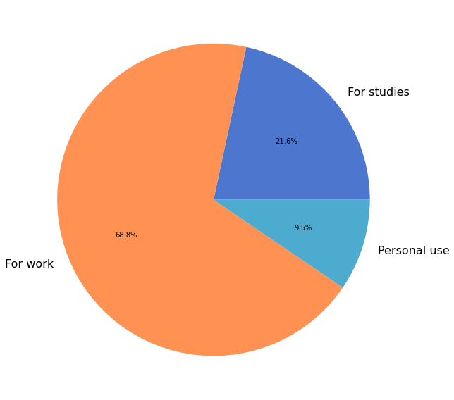

Primary Use-Case¶
1072 (87%) respondents provided information about the primary context in which they use NumPy.
uses = data['primary_use'][data['primary_use'] != '']
labels, cnts = np.unique(uses, return_counts=True)
fig, ax = plt.subplots(figsize=(12, 8))
ax.pie(cnts, labels=labels, autopct='%1.1f%%')
fig.tight_layout()
glue(
'num_primary_use_respondents',
gluval(uses.shape[0], data.shape[0]),
display=False
)
